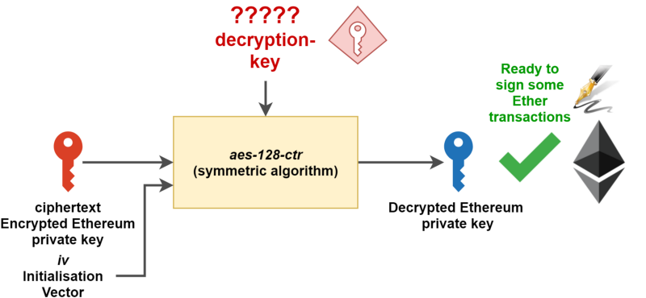
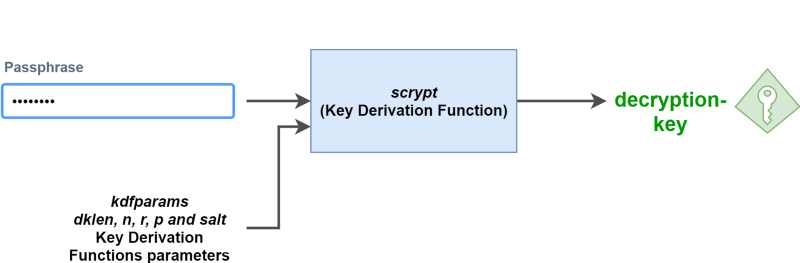

| 知乎专栏 ｜ 多维度架构 | | | 微信号 netkiller-ebook | | | QQ群：128659835 请注明“读者” |
Post author: Martin Wang
Post link: http://stevenocean.github.io/2018/04/02/about-ethereum-keystore.html
Copyright Notice: All articles in this blog are licensed under CC BY-NC-SA 4.0 unless stating additionally.
以太坊的每个外部账户都是由一对密钥（一个公钥和一个私钥）定义的。账户以地址为索引，地址由公钥衍生而来，取公钥的最后 20个字节。每对私钥 /地址都编码在一个钥匙文件里，也就是我们说的keystore文件。该文件是 JSON 文本文件，可以用任何文本编辑器打开和浏览。钥匙文件的关键部分，账户私钥，通常用你创建帐户时设置的密码进行加密。也就是说 keystore 文件，就是你独有的、用于签署交易的以太坊私钥的加密文件。如果你丢失了这个文件，你就丢失了私钥，意味着你失去了签署交易的能力，意味着你的资金被永久的锁定在了你的账户里。
我们先看一下keystore文件都包含哪些数据:
neo@MacBook-Pro ~/Library/Ethereum/testnet/keystore % cat UTC--2018-04-01T09-30-44.943874000Z--d5eeae04932dbc2e65b948a76a6cdfd44323a5dd
{ "address":"d5eeae04932dbc2e65b948a76a6cdfd44323a5dd",
"crypto":{
"cipher":"aes-128-ctr",
"ciphertext":"16715298517abb35cb44e9a32d1f81f21ead63006c57eb0ff434318a6ea3ed3f",
"cipherparams":{
"iv":"1ff6fea34e682158e7660ae67960ff76"
},
"kdf":"scrypt",
"kdfparams":{
"dklen":32,
"n":262144,
"p":1,
"r":8,
"salt":"a99af42dac2363db631ef7c57a25705c7efdee73b19c11b27f9a91d41cd32d1c"
},
"mac":"dcd248fb996604dfcb69a86604af3992b4a9b8d20cc05e0c7608189dbbe66eda"
},
"id":"55edb869-1c86-4c68-924e-8247575a158b",
"version":3
}
我们可以看到大部分内容都在 crypto 字段中，这里包括：
cipher：对称 AES 算法的名称;
cipherparams：上述 cipher 算法需要的参数;
ciphertext：你的以太坊私钥使用上述 cipher 算法进行加密;
kdf：密钥生成函数，用于让你用密码加密 keystore 文件;
kdfparams：上述 kdf 算法需要的参数;
Mac：用于验证密码的代码。
就像之前提到的，一个以太坊账户就是用于加密签署交易的一个私钥-公钥对。为了确保你的私钥没有在文件中明文存储（即任何人只要能得到这个文件就能读），使用强对称算法（cipher）对其加密至关重要。
这些对称算法使用密钥来加密数据。加密后的数据可以使用相同的方法和同样的密钥来解密，因此算法命名为对称算法。在本文中，我们称这个对称密钥为解密密钥，因为它将用于对我们的以太坊私钥进行解密。
加密过程，如下图：
|  |
以下是 cipher，cipherparams 和 ciphertext 对应的概念：
cipher: 是用于加密以太坊私钥的对称加密算法。此处cipher用的是 aes-128-ctr 加密模式。
cipherparams: 是 aes-128-ctr 加密算法需要的参数。在这里，用到的唯一的参数 iv，是aes-128-ctr加密算法需要的初始化向量。
ciphertext: 密文是 aes-128-ctr 函数的加密输入。
在这里，你已经有了进行解密以太坊私钥计算所需要的一切。但是我们首先要取回解密密钥。
要确保解锁你的账户很容易，你不需要记住你的每一个又长又非用户友好型的用于解密 ciphertext 密文解密密钥。相反，以太坊开发者选择了基于密码的保护，也就是说你只需要输入密码就能拿回解密密钥。
为了能做到这一点，以太坊用了一个密钥生成函数，输入密码和一系列参数就能计算解密密钥。
这就是 kdf 和 kdfparams 的用途：
kdf: 是一个密钥生成函数，根据你的密码计算（或者取回）解密密钥。在这里，kdf 用的是scrypt算法。
kdfparams: 是scrypt函数需要的参数。在这里，简单来说，dklen、n、r、p 和 salt 是 kdf 函数的参数。
在这里，用 kdfparams 参数对 scrypt 函数进行调整，反馈到我们的密码中，你就会得到解密密钥也就是密钥生成函数的输出。
|  |
这就是 keystore 文件中 mac 值起作用的地方。在密钥生成函数执行之后，它的输出（解密密钥）和 ciphertext 密文就被处理，并且和 mac（就像一种认可的印章）作比较。如果结果和 mac 相同，那么密码就是正确的，并且解密就可以开始了。
 |